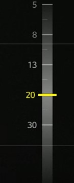
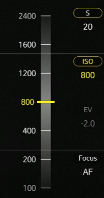
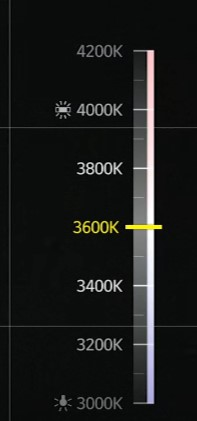
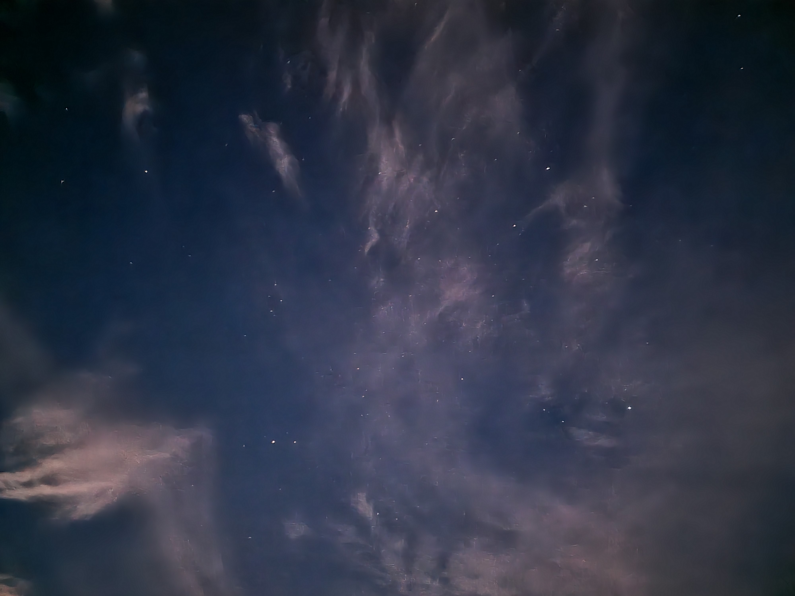

주의: pro모드가 설치되어있는 폰이 아니면 평범하게 DSLR을 구매하시기 바랍니다.
아무리 좋은 장비가 있고 완벽한 촬영방법을 숙지했다 한들, 결국 별이 보이지 않으면 아무런 소용이 없습니다.
그러므로 별을 볼 수 있는 방법을 먼저 설명해 드리겠습니다.
첫번째로는 기상상태입니다. 언제나 일기예보를 확인하시고 구름이 끼거나 미세먼지가 심한날은 피하세요!
기상요건을 충족했으면 다음은 달의 존재입니다. 달은 굉장히 밝아 앞에서 소개한 맨눈으로 보이지 않는 별들을 관측할때 달빛으로 인해 보기 매우 어려울 수 있으니,
삯, 초승달, 그믐달 등의 달이 없거나 어두울 때를 노려서 가십시오.
기상요건과 달마저 없는 맑고 어두운 밤이 되었으면 어두운 곳을 찾아가세요.
도심지에서는 도시의 빛이 너무나 밝아 달과 같이 다른 별빛들을 가립니다(이를 광공해라고 합니다.)
되도록 주위에 밝은 빛이 없는 평지나 높은 산을 찾아가세요
근처에 호수나 바다가 있거나 나무가 많은 산들은 안개가 껴 시야를 가리거나 나무 자체가 하늘을 가려 별을 보기에 좋지 않을 수 있습니다.
첫번째로 휴대폰과 삼각대를 준비하세요
준비된 삼각대에 휴대폰을 거치하시고 카메라의 전문가모드(혹은 pro모드)에 들어가십시오
전문가모드의 raw형식으로 저장을 켜주세요, 나중에 보정시 깨지지 않고 보정이 잘 됩니다.(일주운동등의 촬영은 편집이 필수 입니다.

이 후 카메라 흔들림 방지를 위해 타이머를 3초정도로 설정해주세요. 촬영버튼을 누를시에 나오는 흔들림을 방지할 수 있습니다.(음성촬영도 가능합니다.)
빛의 노출량을 늘리기 위해 셔터속도를 15~20초 이상으로 설정해주세요
감도(ISO)를 800~3200사이로 조정해줍니다. 다만 너무 높게 설정할 시 화질이 나빠질 수 있습니다
초점은 최대한 멀리로 한 뒤에 하늘을 보며 조정해주세요.
화이트 밸런스(WB)는 취향따라 다르게 조정하면 됩니다. 파란걸 좋아하면 낮게, 붉은걸 좋아하면 높게
위 값들은 절댓값이 아닙니다. 익숙해지면 차차 자신에게 맞는 값을 조정하면서 촬영해보세요!
아래 사진은 작성자가 직접 찍은 별사진입니다.
최근 갤럭시 22부터는 천체모드라는 직접 촬영 기능이 새로 생겼습니다. 모드가 있으면 모드를 이용해주세요.